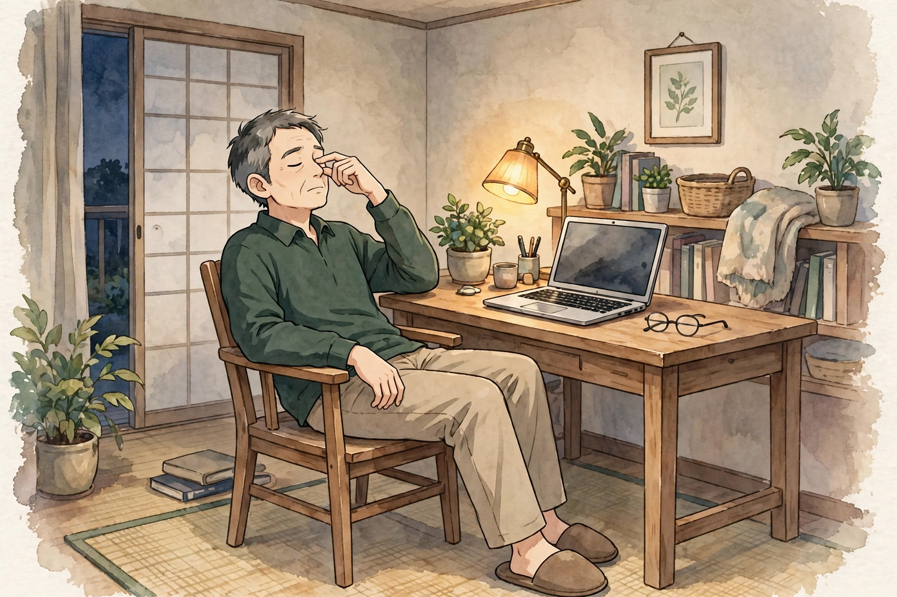

東三国で冬の乾燥・冷え込みの始まりに気になる目の疲れ感
男性の要因整理とセルフケア、受診の目安

11月も終わりに近づき、朝晩の冷え込みが一段と進むようになりました。東三国駅のホームで電車を待つ朝、コートの襟を立てても首元から冷たい空気が入ってくる、職場では暖房が入り始め、デスクのまわりは昼間から乾いた空気になっている——そんな冬の始まりの時期に、目の疲れ感が気になることはありませんか。夕方になると目が重くて画面の文字がかすむ、朝起きたときに目が乾いた感じがして開けにくい、夜には目の奥が重くて本や画面に集中しにくい。ここでいう「冬の乾燥・冷え込みの始まり」とは、暖房を使い始めて室内が乾き始め、朝晩の冷え込みがはっきりしてくる11月下旬から12月にかけての時期のことです。東三国に住む男性、あるいは東三国で働く男性を思い浮かべながら、冬の始まりに感じる目の疲れ感の表れ方、重なりやすいきっかけ、過ごし方とセルフケア、受診の目安を整理します。
冬の乾燥と冷え込みの始まりに感じる目の疲れ感は、どんな感じで表れるのか
一般に「目の疲れ感」と呼ばれる感覚は、目が重い、乾いた感じがする、かすむ、しょぼしょぼする、目の奥が重い、まぶたが重く感じるなどとして自覚されることが多いとされています。これに「首や肩の張り」「頭の重さ」が重なる方もいます。冬の始まりは、暖房を使い始めた室内の乾燥と、朝晩の冷え込みが重なる時期で、目の乾きや重さを夕方や夜に強く意識する、朝は目が開けにくく、昼過ぎからかすみやすくなる、といった1日のなかでの違いが見られることもあります。まずは「いつごろから、どんなときに、どんな感覚があるか」「暖房を使い始めてから強くなったか」を自分の言葉で整理しておくと、セルフケアの選び方や、専門家に相談するときの伝え方がスムーズになります。秋の季節の変わり目に目の疲れ感が気になった方は、秋の季節の変わり目に気になる目の疲れ感についてのコラムもあわせてご覧ください。
冬の始まりは、暖房の使い始めと、朝晩の冷え込みの進み方が重なる時期です。昼間は暖房の効いた室内で画面を見続け、朝晩は冷たい外気に当たって目が乾いた感じがする、帰宅してからも暖房の風が顔に当たり続ける、そんな日の積み重ねが、目の疲れ感の感じ方につながる場合もあります。まずは自分の1日の過ごし方を振り返ってみてください。目の疲れ感と重なって自覚されやすい場所は図1をご覧ください。

冬の始まりは、目のまわりだけでなく、こめかみや額、首の付け根の張りと重なって自覚されることがあります。暖房の風が顔に当たる席や、寒さで肩に力が入る姿勢が続くと、頭のまわりにも力が入りやすくなります。位置は目安です。
目の疲れ感と重なって自覚されやすい場所は、図1に示したとおりです。
冬の乾燥と冷え込みの始まりに重なりやすい7つのきっかけ
冬の始まりに目の疲れ感が気になりやすくなる背景は、ひとつとは限らず、いくつかの要因が重なっている場合もあります。以下は考えられる要因の例です。当てはまるかどうかや程度は人によって異なります。自分の1日の過ごし方を振り返ると、手がかりになります。冬の始まりは、室内と屋外の行き来でも感じ方が変わります。
- 暖房の使い始めで、室内の空気が乾きやすくなること：11月下旬から12月にかけて、職場や自宅で暖房を使い始める日が増えます。暖房の効いた室内では空気が乾きやすく、長時間過ごすと目が乾いた感じがしたり、まばたきの回数が増えたように感じたりする方もいます。暖房の風が顔に直接当たる席では、乾きを強く意識する場合もあります。座る位置や風の向きを振り返ってみると手がかりになります。
- 朝晩の冷え込みと、寒暖差の広がり：冬の始まりは、日中と朝晩の気温差が広がる時期です。朝の冷え込んだ駅のホームや、夜の帰り道で冷たい風に当たったあと、目がしょぼしょぼする、涙が出やすいと感じる方もいます。寒さで体に力が入り、首や肩がこわばると、目のまわりの重さと重なって感じられる場合もあります。
- 画面を見る時間の延びと、年末の仕事の立て込み：12月が近づくと、締め切りや納期、手配ごとが重なり、画面を見る時間が延びる日が増えます。1時間以上続けて画面を見た日は、夕方に目が重く感じる方もいます。画面の明るさと部屋の明るさの差が大きい席では、目の乾きを意識しやすくなる場合もあります。
- 暖房と換気の行き来による、目まわりの冷えと乾燥：暖房の効いた室内から、換気で開けた窓のそばや、冷えた廊下へ出る行き来が増える時期です。温かい室内と冷たい空気の行き来が重なると、目が乾いた感じがしたり、目元が冷えたように感じたりする方もいます。席の位置や換気の時間帯を振り返ってみると手がかりになります。
- 水分をとる機会の減り：寒くなると、冷たい水を飲む機会が減り、水分をとる量が少なくなる方もいます。温かい飲み物をそばに置いていても、仕事に集中しているうちに飲み忘れる日もあります。朝起きたときに喉が渇いている日や、目が乾いた感じがする日は、水分のとり方もあわせて振り返ってみるとよいでしょう。
- 睡眠時間の短さと、夜更かしの重なり：年末が近づくと、忘年会や残業で帰宅が遅くなり、就寝時刻がずれる日が増えます。睡眠時間が短い翌朝は、目が開けにくい、目の奥が重いと感じる方もいます。東洋医学の考え方では、夜は体を休めて気を養う時間とされています。就寝時刻のずれもあわせて振り返ってみるとよいでしょう。
- 屋外の乾いた風と、夜の外出の増加：冬の始まりは、北風の冷たい日が増え、イルミネーションや買い物、忘年会などで夜に出かける機会も増える時期です。乾いた風に当たりながら歩いたあと、目が乾いた感じがしたり、まぶしさを強く感じたりする方もいます。夜の外出が続いた週は、目の疲れ感を意識しやすい場合もあります。
7つのきっかけのなかで、当てはまるものが複数ある方は、まず一つだけ見直してみるところから始めてみてください。暖房の風の向きや水分のとり方など、変えやすいものから整えていくと、1日の過ごし方の手がかりが見えてきます。
冬の始まりの過ごし方と、日常で試せるセルフケア
冬の始まりのセルフケアは、暖房の風と室内の乾燥への工夫と、画面から目を離す時間の作り方、首元を温めて冷えに備えることが中心になります。強い力で目を押したり、無理な姿勢を続けたりはせず、痛みや見え方の変化があるときは無理をしないでください。気になる様子が強いときは、セルフケアより先に医療機関への相談をご検討ください。冬の始まりだからこそ、無理のない範囲で続けられるものを選ぶことが大切です。今日から試せるものから始めてみてください。
- 20分ほど見たら、遠くを見て目と首を休ませる：画面から目を離し、窓の外や部屋の遠くのほうを数十秒ぼんやり眺める工夫です。飲み物を取りに行く、立ち上がって背伸びをするといった動きと組み合わせると続けやすくなります。
- 暖房の風が顔に当たらないよう、席の向きや風向きを変える：暖房の風が顔に直接当たる席では、風向きを変えたり、席の向きを少しずらしたりする工夫です。風が当たらないだけで、目の乾いた感じが和らぐと感じる方もいます。自宅では、加湿器をそばに置く方法もあります。
- 目を閉じて数分休み、深呼吸をする：椅子やソファに座り、画面を伏せて置いて、目を閉じたまま数分過ごす形です。肩の力を抜いて、鼻からゆっくり吸い、口から細く長く吐く深呼吸をあわせて行います。眠ってしまいそうなときは、タイマーを掛けておくと安心です。
- 蒸しタオルで目まわりを温める：夕方や入浴のついでに、温かい蒸しタオルを閉じた目の上に数分当てる形です。熱すぎない温度で、気持ちよいと感じる範囲にとどめてください。朝晩の冷えを感じる日は、湯船に浸かって首から肩まで温める過ごし方も一つの方法です。
- 首をゆっくり傾けて、首まわりをゆるめる：椅子に座り、頭をゆっくり横へ傾けて首の横を伸ばす形です。手順は図2のとおりです。反対側も同じように行い、呼吸に合わせてゆっくり動かします。首に痛みがあるときは動きの幅を小さくするか、中止してください。
- 温かい飲み物をそばに置いて、水分をとる機会を増やす：白湯や温かいお茶をデスクのそばに置き、画面を見る合間に少しずつ飲む工夫です。冷たい水が飲みにくい季節は、温かい飲み物に替えると続けやすくなります。飲んだ量を手帳に残しておくと振り返りに役立ちます。
- 1日の目と体の様子を手帳に残す：「何時ごろ目の重さを強く感じたか」「暖房を使い始めた日かどうか」を手帳に書き留めると、冬の始まりの過ごし方の振り返りに役立ちます。画面時間や睡眠のとり方との関係もあわせて残しておくと、自分の過ごし方の手がかりになります。
セルフケアは一度に全部をやろうとせず、続けられそうなものを一つ選ぶところから始めてください。感じ方には個人差があり、その日の気温差や仕事の量でも変わります。首を傾ける手順は、図2を参考に、無理のない範囲で行ってください。翌朝の目覚めの感じ方もあわせて手帳に残しておくと、自分の1日の過ごし方の振り返りに役立ちます。

①背筋を伸ばして座る（立つ） ②頭を片側へゆっくり傾け、手を頭の横に軽く添える程度にする ③首の横側が心地よく伸びるところで数呼吸止め、反対側も同じように行う、が基本の流れです。大きく回したり、力を入れて引っぱったり、勢いをつけたりしないでください。
こんなサインが出たら、まず医療機関へ相談を
次のような様子がある場合は、セルフケアや当院でのケアの前に、医療機関への相談をご検討ください。当院は医療機関ではなく、診断や治療は行いません。「冬の乾燥のせいだろう」と思っていても、ほかの原因の場合があります。気になる様子が長く続くときは、一人で抱え込まず、早めに相談することが大切です。1日の様子を手帳に残しておくと、相談の際に伝えやすくなります。
- 目の痛みや充血が強い、目やにが多く出る
- 見え方が急に変わった、視野の一部が見えにくい、物が二重に見える
- 目の乾きやかすみが2週間以上続いている、日に日に強くなっている
- 頭痛や吐き気が重なって出てくる
- まぶたの腫れやただれが気になる
- 光がまぶしくて目が開けにくい日が続いている
上に挙げたものに当てはまらなくても、気になる様子が続くときは早めに相談することが大切です。1日の目と体の様子を手帳に残しておくと、相談の際に伝えやすくなります。一人で抱え込まず、気軽に相談してみてください。
北辰堂のご案内
北辰堂は、大阪市淀川区東三国二丁目にある男性専用の整体院です。施術歴30年の平賀伸人（鍼灸師・国家資格）が、整体とリラクゼーションを行います。当院では鍼灸施術は行いません。営業は平日・土曜17:00〜22:00、日曜10:00〜22:00の完全予約制です。冬の乾燥や冷え込みの始まりに目の疲れ感が気になる方は、仕事帰りの平日・土曜の夕方や、日曜の時間帯に、冬の始まりの過ごし方も含めてご相談いただけます。プライバシーへの配慮のため、詳しい住所はご予約確定後にLINEでご案内します。
料金は60分 初回2,000円／2回目以降6,000円、90分 初回3,000円／2回目以降9,000円で、お支払いは現金のみです。施術を受けたからといって目の疲れ感の状態がどうなるかをお約束することはできませんが、その日の体の状態を確認しながら、首や肩、背中や姿勢全体の様子も見て、骨格の土台と巡りの両方を整える施術で、ゆっくり体を預けられる時間をご用意しています。冬の始まりの過ごし方や、ふだんの体の使い方など、日常で気になっていることも、カウンセリングの際にお聞かせください。
コースの内容はメニュー・料金、施術者は施術者について、気になるお悩みの例は北辰堂について、ご予約の流れは当日の流れとLINE予約の下書きづくり、場所についてはアクセスをご覧ください。よくある質問もご参考ください。